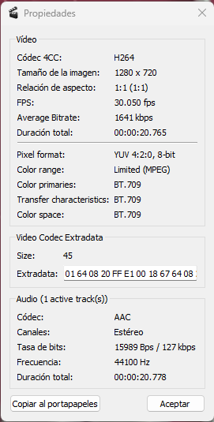

Elige un clip de vídeo de máximo 20 segundos (puedes crearlo con tu dispositivo móvil, que tenga objetos en detalle y en movimiento) y codifícalo con Avidemux eligiendo el formato
y resolución que creas adecuadas para su publicación en web. Teniendo en cuenta que no todos los navegadores aceptan todos los códecs, codifica el vídeo en los formatos necesarios
para que sea compatible con el máximo de navegadores posible. Explica las decisiones tomadas en la codificación y el porqué de cada una.
Confirma con la herramienta MediaInfo que lo ha codificado a la velocidad que querías.
Decisiones de codificación:

Formato MP4 (Contenedor): El formato MP4 es ampliamente utilizado en la web debido a su capacidad para combinar video y audio en un solo archivo.
Códec de Video H.264: H.264 es un códec de compresión eficiente y ampliamente compatible que ofrece buena calidad de video con tamaños de archivo reducidos. La mayoría de los navegadores modernos pueden reproducir video codificado con H.264 sin problemas.
Códec de Audio AAC (fdk): AAC es un códec de alta calidad que proporciona buen sonido en archivos comprimidos. La variante fdk de AAC es preferida por su mejor rendimiento y compatibilidad con diversos dispositivos y navegadores.
Formato de Salida MP4 Muxer: El muxer MP4 combina el video H.264 y el audio AAC (fdk) en un archivo MP4, asegurando una reproducción correcta en navegadores y dispositivos compatibles.
Tarea 1.2
Crea la web. Genera un fichero .html mediante un editor de texto, incrústale el clip de vídeo codificado utilizando el tag <video> de HTML5 y prepara la web para que pueda ser visualizada desde la mayor parte de los navegadores.
En la tarea 1, se responde a esta pregunta.
¿Qué caracteriza el formato HTML5 en publicación y visualización de un vídeo respecto de otros métodos de publicación?
Compatibilidad Universal: HTML5 es ampliamente compatible con la mayoría de los navegadores modernos, lo que garantiza que el video incrustado sea visible en una amplia gama de dispositivos y navegadores sin necesidad de complementos o reproductores de terceros.
Reproducción sin Problemas: La etiqueta <video> de HTML5 permite una reproducción fluida y controlable del video directamente en el navegador, con opciones como reproducción, pausa, volumen, pantalla completa, entre otras, proporcionando una experiencia de visualización más interactiva para los usuarios.
Soporte para Múltiples Formatos: HTML5 admite una variedad de formatos de video como MP4, WebM, y Ogg, lo que brinda flexibilidad al publicar videos en la web y permite que los usuarios vean el contenido en función de la compatibilidad de sus navegadores.
Etiquetas y Atributos Semánticos: HTML5 incluye etiquetas y atributos semánticos que mejoran la estructura y accesibilidad del contenido multimedia. Esto facilita la comprensión del contenido para los motores de búsqueda y usuarios con discapacidades visuales.
Optimización para Dispositivos Móviles: HTML5 está diseñado para ser compatible con dispositivos móviles, permitiendo la visualización de contenido en diferentes tamaños de pantalla y dispositivos sin problemas de rendimiento o compatibilidad.
Mejor Manejo de Formularios: HTML5 mejora el manejo de formularios y permite una mayor flexibilidad y personalización en la creación de formularios interactivos, lo que es útil para aplicaciones web avanzadas que incluyen contenido multimedia.
Accesibilidad Mejorada: HTML5 incluye características como subtítulos automáticos y atributos semánticos que mejoran la accesibilidad del contenido, permitiendo una mejor experiencia para usuarios con discapacidades auditivas o visuales.
Seguridad y Rendimiento: Al eliminar la necesidad de plugins externos como Flash, HTML5 reduce los riesgos de seguridad y mejora el rendimiento general de la página web.
SEO Amigable: Los videos HTML5 pueden ser indexados mejor por los motores de búsqueda gracias a su estructura semántica y la inclusión de metadatos, lo que mejora la visibilidad en los resultados de búsqueda.
Tarea 1.3
Publica el fichero .html y el vídeo en un servidor web gratuito o al CDN visto en la PEC1 (web estática) para verlo con una dirección http pública y valora la experiencia a nivel de usuario/a (retraso de visualización, calidad, etc.).
Retrasos de visualización: El retraso en la visualización de los vídeos puede variar según la ubicación geográfica del usuario y la capacidad del servidor gratuito.
Optimiza los archivos de vídeo: Hay que asegurarse de que los archivos de vídeo estén comprimidos y no sean demasiado pesados. Esto ayudará a acelerar la carga y reproducción.
Velocidad de carga: La velocidad de carga también depende de tu conexión a Internet y la del servidor. Si ambos son rápidos, el retraso debería ser mínimo.
Calidad del video: es crucial para ofrecer una buena experiencia.
Codificación adecuada: Hay que asegurarse que los vídeos estén codificados correctamente. Se recomienda formatos como MP4 o WebM para mantener una alta calidad. En este proyecto se ha usado MP4
Problemas de buffering o baja resolución: Observa si hay problemas de buffering o si la resolución del vídeo es baja, puede afectar negativamente.
Compatibilidad:para conseguir que sea compatible con todos los navegadores.
Utilizando el tag <video> de HTML5 para insertar el vídeo en tu página web. Proporciona múltiples fuentes de vídeo (por ejemplo, MP4 y WebM) dentro de la etiqueta para asegurar la compatibilidad.
Utilizando el tag <source> el navegador elegira automaticamente la fuente mas adeucada segun su compatibildiad